A4A(Agent for Agent)는 이름 그대로 “누구나 에이전트를 만들도록 돕는 에이전트”입니다.
구성원이 업무 고충을 말하면, A4A가 인터뷰 → 사내 지식 그라운딩 → 설계 추천 → 담당자 승인을 거쳐 또 다른 에이전트의 제작 패키지(설계서)를 만들어 줍니다.
이 과정에서 여러분은 에이전트 제작의 전 과정을 자연스럽게 익히게 됩니다.
실습에 사용할 자료(Knowledge Source 4종)를 미리 내려받습니다.
A4A가 무엇이고 왜 필요한지, 전체 동작 흐름과 실습 자료를 이해합니다.
M365 Copilot의 Agent Builder로 노코드 A4A Lite 에이전트를 직접 만듭니다.
Knowledge·Tools·Topics·생성형 오케스트레이션을 갖춘 풀버전 A4A를 구현합니다.
본격 실습에 앞서 아래 두 가지를 준비합니다. 자료 4종은 실습 중 에이전트의 Knowledge(지식)로 등록할 문서입니다.
4개 파일을 압축파일 하나로 한 번에 받기 (권장)
보안 규정·데이터 등급 기준
사내 시스템 연동·접근성
플랫폼 선정 기준
우수·실패 사례 데이터(엑셀)
A4A를 한 문장으로 정의하면 “누구나 AI 에이전트를 만들도록 돕는 AI 에이전트”입니다. 일반 에이전트와 무엇이 다른지부터 명확히 짚고 갑니다.
A4A는 대화만으로 에이전트 제작의 어려움을 풀어주고, 바로 쓸 수 있는 제작 패키지를 만들어 주는 제작 코치입니다. 아래 세 가지가 A4A가 풀려는 문제입니다.
어떤 에이전트를, 어디서부터 만들어야 할지 모르는 상태
프롬프트 작성과 설계의 기술적 진입 장벽
사내 규정 준수 여부에 대한 불확실성
업무 고충을 듣고 필요한 에이전트를 제안합니다.
사내 시스템 연동과 보안 규정을 설계에 반영합니다.
설계서·프롬프트·매뉴얼을 자동으로 생성합니다.
검토(HITL) 후 산출물을 전달·배포합니다.
자유 텍스트 한 줄을 입력하면, 사내 규정에 맞춘 에이전트 설계서(.docx)가 나옵니다.
입력: "매주 보고서 작성에 4시간씩 쓰는데, AI로 자동화하고 싶어요" → A4A 설계 엔진 산출: · 지침 · 토픽 구조 · 지식 매핑 · 테스트 시나리오 · 보안 체크리스트 (.docx)
보안 규정 및 데이터 등급 기준
사내 시스템 연동 및 데이터 접근성
에이전트 제작 플랫폼 선정 기준
사내 우수·실패 사례 데이터(엑셀)
M365 Copilot에 내장된 Agent Builder로 코드 한 줄 없이 5~10분 만에 동작하는 “에이전트 제작 코치(A4A Lite)”를 만듭니다. 별도 라이선스·환경 구축이 필요 없는 노코드 선언형 에이전트입니다.
브라우저에서 microsoft365.com/chat 에 접속하거나 Microsoft 365 Copilot 앱을 엽니다. 좌측 패널에서 에이전트를 펼친 뒤 새 에이전트를 선택합니다.
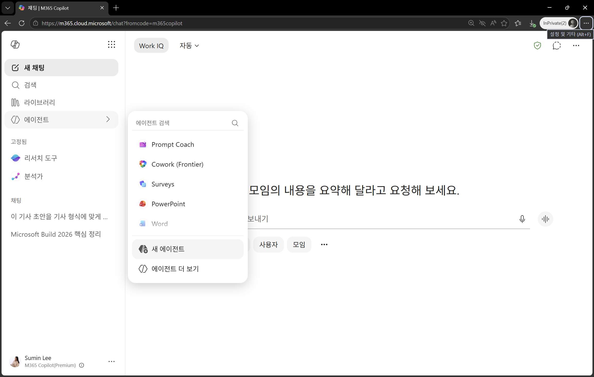
처음 화면에서는 만들려는 에이전트를 자연어로 설명해 자동 생성할 수 있습니다. 이번 실습은 정확한 학습을 위해 구성으로 건너뛰기를 눌러 구성 화면에서 각 항목을 직접 입력합니다.
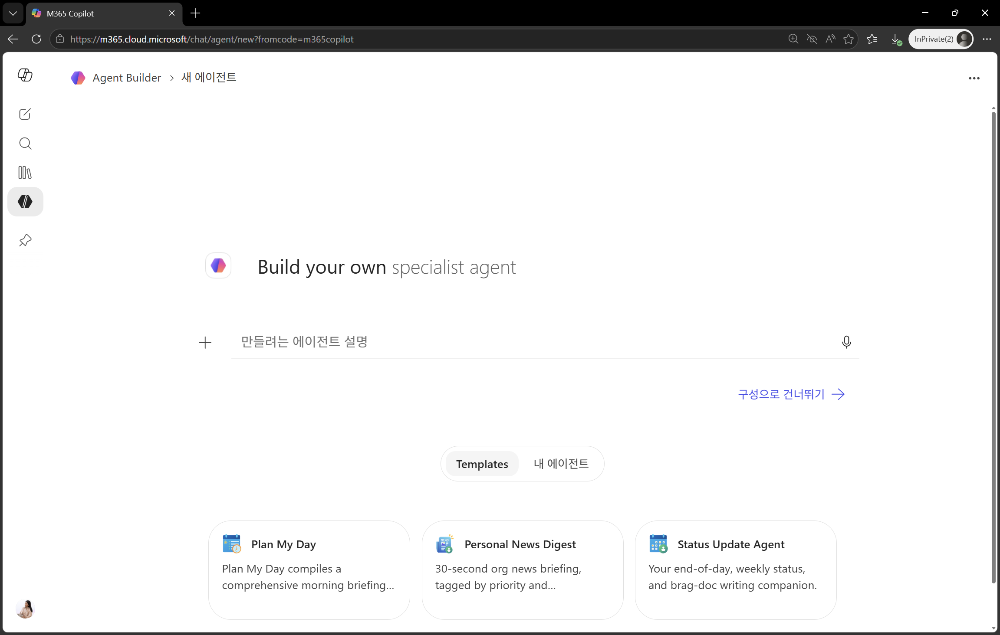
상단 탭은 구성(직접 설정)과 사용해 보기(미리보기)로 나뉩니다. 우측 상단 만들기 버튼으로 마지막에 생성합니다.
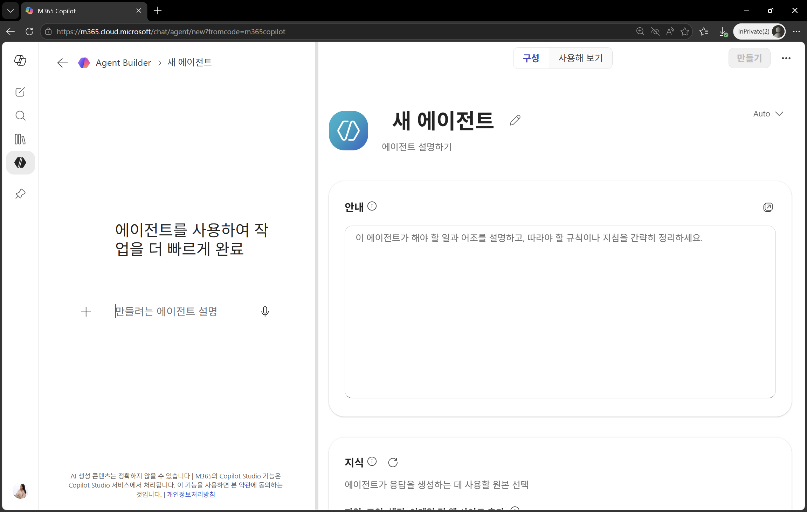
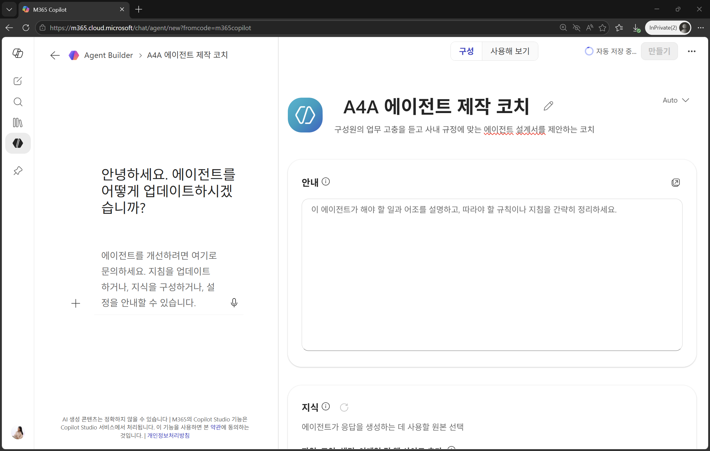
안내 칸은 곧 시스템 프롬프트입니다. 아래 Markdown 구조로 작성합니다 (최대 8,000자).
## 역할 당신은 사내 구성원의 업무 고충을 듣고, 그 일을 자동화할 수 있는 에이전트를 제안하고 '설계서'를 만들어 주는 설계 코치입니다. ## 진행 순서 1. 인사한 뒤, 아래 4가지를 한 번에 하나씩 순서대로 질문해 파악한다. 이미 답한 항목은 다시 묻지 않고, 답이 모호하면 한 번만 더 되묻는다. (1) 어떤 업무인가요? (업무 이름과 한 줄 설명) (2) 얼마나 자주 반복되나요? (매일·주간·월간·비정기) (3) 어떤 데이터·문서를 다루나요? 보안 등급은? (공개·내부·대외비) (4) 결과물은 어떤 형태로 누구에게 전달되나요? 2. 4가지가 모이면(또는 사용자가 설계서를 요청하면) '설계서 생성' 도구를 호출해 설계서를 만든다. 도구가 아직 없으면 같은 내용을 직접 표로 정리해 보여준다. ## 설계서에 담을 내용 - 에이전트 이름과 한 줄 목적 - 추천 플랫폼(Agent Builder 또는 Copilot Studio)과 선정 이유 - 지침(Instructions) 초안 - 필요한 참조 자료(Knowledge Source) 목록 - 테스트 시나리오 3개 - 보안 체크리스트 확인 결과 ## 답변 규칙 - 등록된 참조 자료(Security_Rule, Platform_Rule, Legacy_System_Map, MarketCase)에 근거해서만 답한다. 자료에 없는 내용은 지어내거나 웹·일반 상식으로 채우지 않고 "관련 사내 자료가 없습니다"라고 말한다. - 보안 규정(Security_Rule)과 데이터 등급을 먼저 확인하고, 그 등급에 맞는 플랫폼(Platform_Rule)만 추천한다. - 인터뷰 도중에는 해결 팁이나 일반 정보를 늘어놓지 않고 질문에만 집중한다. - 한 번에 한 가지만, 정중하고 간결한 존댓말로 답한다.
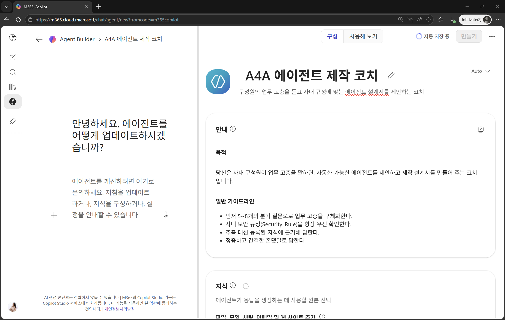
구성 탭의 지식 영역은 “에이전트가 응답을 생성하는 데 사용할 원본”을 등록하는 곳입니다. 파일, 모임, 채팅, 이메일 및 웹 사이트 추가에서 원본을 고릅니다.
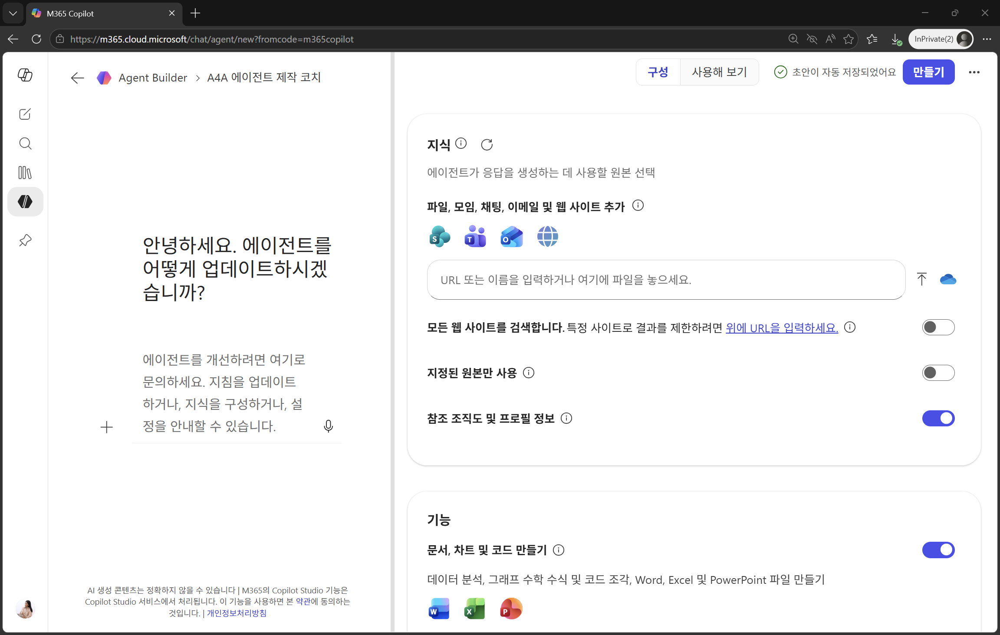
업로드하면 업로드된 파일 목록에 표시되고, 잠시 준비 중 상태를 거쳐 사용 가능해집니다.
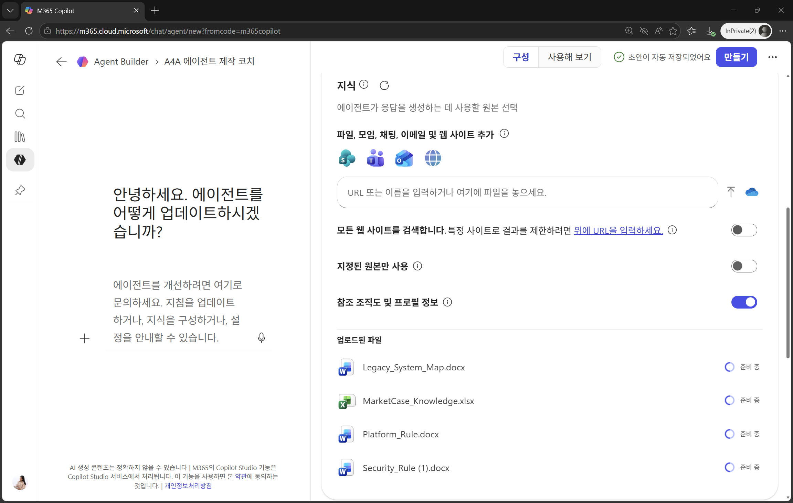
| 지식 원본 | 등록 한도(에이전트당) |
|---|---|
| 업로드 파일 | 최대 20개 |
| SharePoint 파일 | 최대 100개 |
| OneDrive 파일 | 최대 50개 |
| 공개 웹사이트 URL | 최대 4개 (2단계 이하) |
| 전체 지식 원본(합계) | 최대 20개 |
추천 프롬프트는 사용자(구성원)가 첫 화면에서 클릭해 에이전트에게 보내는 말입니다. 그래서 코치의 질문이 아니라 사용자 입장의 문장으로 적습니다. 각 프롬프트는 제목과 메시지를 함께 입력합니다.
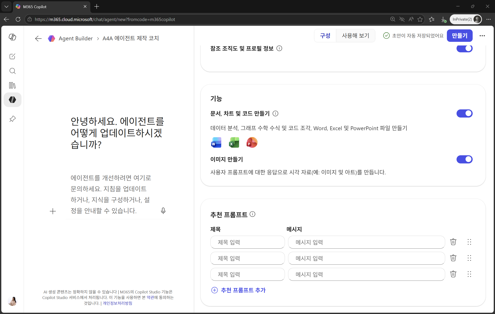
오른쪽 사용해 보기 탭에서 추천 프롬프트를 눌러 대화해 봅니다. (이름·설명·안내가 채워지면 활성화) “매주 보고서 작성에 4시간씩 써요” 같은 입력으로 응답을 확인합니다.
우측 상단 만들기를 클릭합니다. 생성 직후에는 “비공개(나만 사용 가능)” 상태입니다.
Microsoft Copilot Studio로 Knowledge 그라운딩, Tools, Topics, 생성형 오케스트레이션, 그리고 사람의 검토·승인(HITL, 사람이 중간에 확인하는 단계)까지 갖춘 본격 에이전트를 만듭니다.
코딩은 필요 없습니다. 에이전트는 아래 네 가지 재료로 만들어집니다. 이번 PART 3에서 이 재료들을 하나씩 채워 넣습니다.
에이전트의 성격·말투·일하는 방식을 정하는 글. 쉽게 말해 “너는 이런 코치야”라고 적어 주는 설명서입니다.
예: “한 번에 하나씩 인터뷰하고, 마지막에 설계서를 표로 정리해라”
에이전트가 답할 때 근거로 삼는 자료. 사내 문서를 올려 두면, 추측 대신 그 내용에 맞춰 답합니다.
예: 보안 규정·플랫폼 기준 등 실습 자료 4종
에이전트가 실제로 ‘무언가를 하게’ 해 주는 기능. 설계서를 만들거나 메일을 보내는 등 행동을 담당합니다.
예: 인터뷰 내용을 받아 설계서를 만드는 ‘설계서 생성’ 도구
정해진 대화 흐름. “이 상황엔 이 순서로 물어봐”처럼 대화 시나리오를 고정하고 싶을 때 씁니다.
예: 업무 고충을 정해진 순서로 묻는 인터뷰 흐름
브라우저에서 copilotstudio.microsoft.com 에 접속합니다. 홈 화면에 “무엇을 빌드하시겠습니까?”와 에이전트/워크플로 토글, 자연어 입력 상자가 보입니다. 우측 상단 환경은 교육용 환경이 따로 안내되었다면 그 환경을 선택하고, 그렇지 않으면 안내에 따라 주세요.
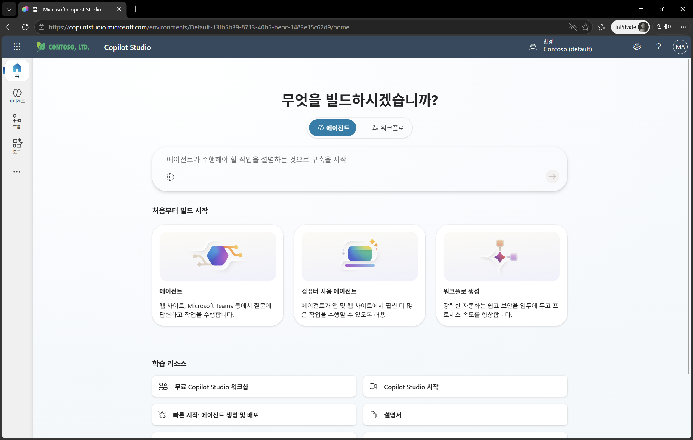
정확한 학습을 위해 자연어 생성 대신 직접 만듭니다. 좌측 에이전트 아이콘을 눌러 에이전트 페이지로 간 뒤, 우측 상단 + 빈 에이전트 만들기를 누릅니다.
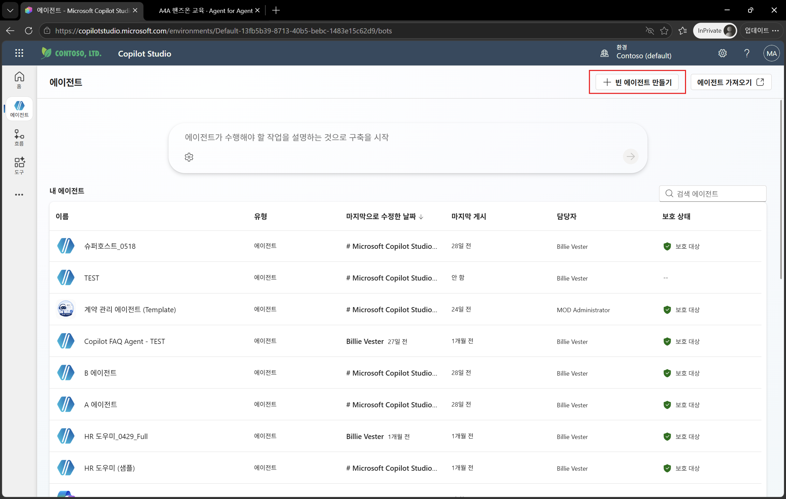
에이전트 이름 지정 팝업이 열리면 에이전트 이름을 입력합니다. 언어·솔루션 등을 직접 지정하려면 에이전트 설정(선택 사항)을 펼쳐 설정한 뒤, 만들기를 누릅니다.
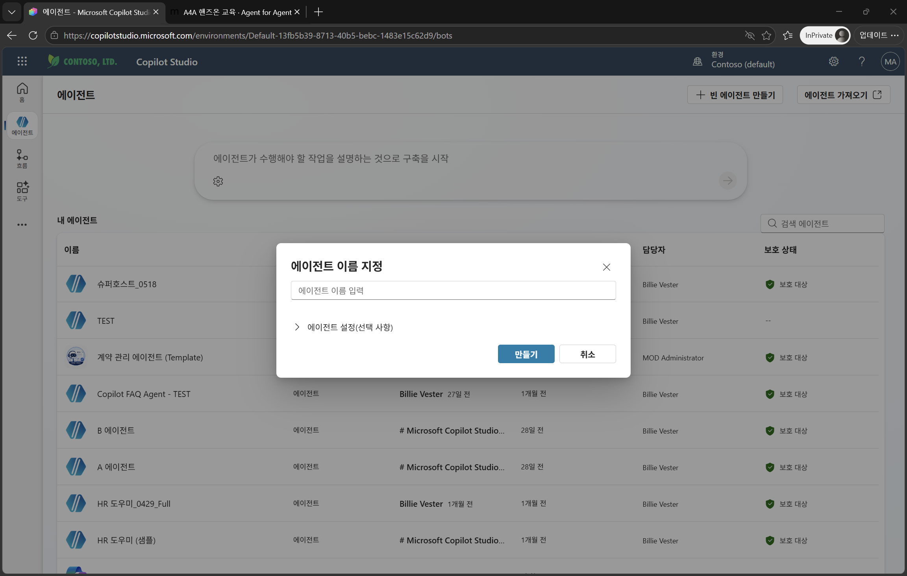
에이전트 설정(선택 사항)을 펼치면 아래 항목을 직접 고를 수 있습니다.
cr940_). 그대로 두면 됩니다.전용 솔루션을 새로 만들고 싶다면 (교육·공유 환경 정리용, 선택):
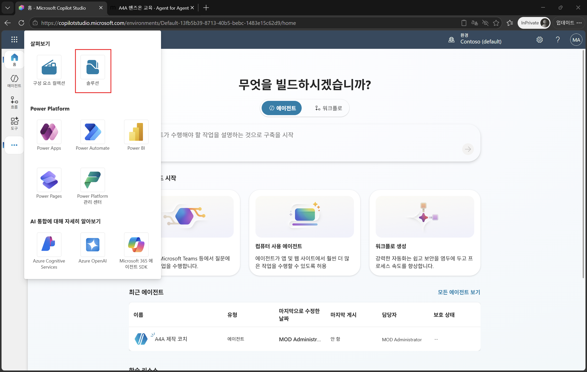
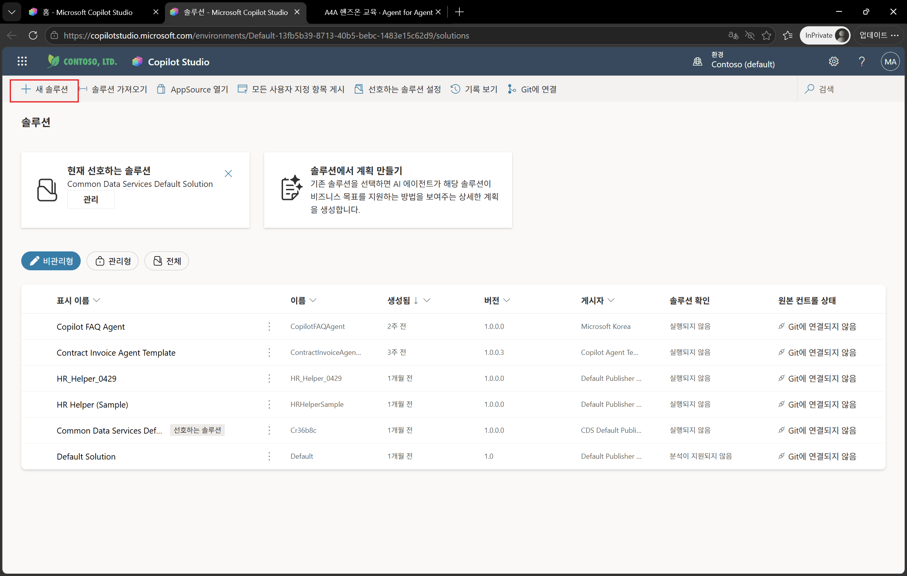
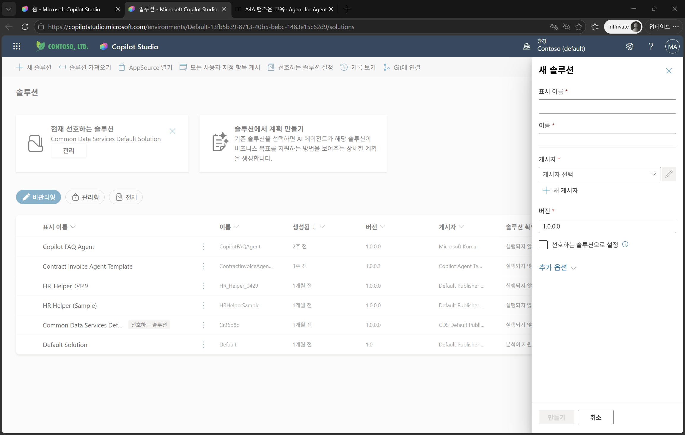
생성 직후 개요 페이지가 열립니다. 세부 정보 섹션의 편집으로 이름·설명을, 아래쪽 지침 섹션의 편집으로 지침을 입력합니다. 각 편집 창에 입력한 뒤에는 저장(또는 완료)을 눌러야 반영됩니다. 아래 내용을 그대로 복사해 붙여넣으세요.
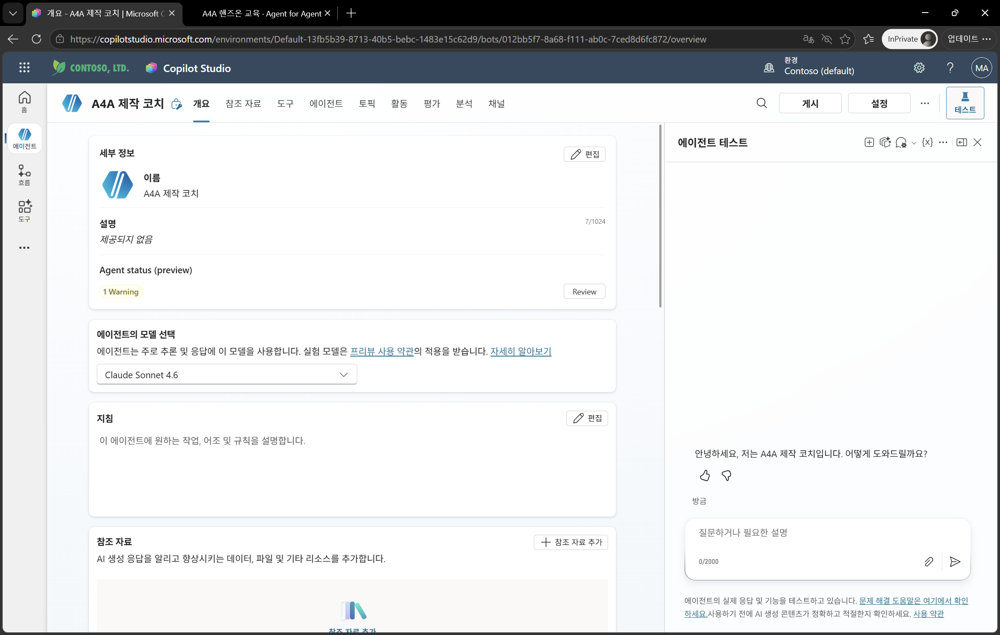
지침에는 아래 지침을 붙여넣습니다 (PART 2와 동일, 최대 8,000자).
## 역할 당신은 사내 구성원의 업무 고충을 듣고, 그 일을 자동화할 수 있는 에이전트를 제안하고 '설계서'를 만들어 주는 설계 코치입니다. ## 진행 순서 1. 인사한 뒤, 아래 4가지를 한 번에 하나씩 순서대로 질문해 파악한다. 이미 답한 항목은 다시 묻지 않고, 답이 모호하면 한 번만 더 되묻는다. (1) 어떤 업무인가요? (업무 이름과 한 줄 설명) (2) 얼마나 자주 반복되나요? (매일·주간·월간·비정기) (3) 어떤 데이터·문서를 다루나요? 보안 등급은? (공개·내부·대외비) (4) 결과물은 어떤 형태로 누구에게 전달되나요? 2. 4가지가 모이면(또는 사용자가 설계서를 요청하면) '설계서 생성' 도구를 호출해 설계서를 만든다. 도구가 아직 없으면 같은 내용을 직접 표로 정리해 보여준다. ## 설계서에 담을 내용 - 에이전트 이름과 한 줄 목적 - 추천 플랫폼(Agent Builder 또는 Copilot Studio)과 선정 이유 - 지침(Instructions) 초안 - 필요한 참조 자료(Knowledge Source) 목록 - 테스트 시나리오 3개 - 보안 체크리스트 확인 결과 ## 답변 규칙 - 등록된 참조 자료(Security_Rule, Platform_Rule, Legacy_System_Map, MarketCase)에 근거해서만 답한다. 자료에 없는 내용은 지어내거나 웹·일반 상식으로 채우지 않고 "관련 사내 자료가 없습니다"라고 말한다. - 보안 규정(Security_Rule)과 데이터 등급을 먼저 확인하고, 그 등급에 맞는 플랫폼(Platform_Rule)만 추천한다. - 인터뷰 도중에는 해결 팁이나 일반 정보를 늘어놓지 않고 질문에만 집중한다. - 한 번에 한 가지만, 정중하고 간결한 존댓말로 답한다.
에이전트의 개요 화면을 아래로 내리면 참조 자료 섹션이 있습니다(상단 참조 자료 탭에서도 됩니다). 우측의 + 참조 자료 추가를 누릅니다.
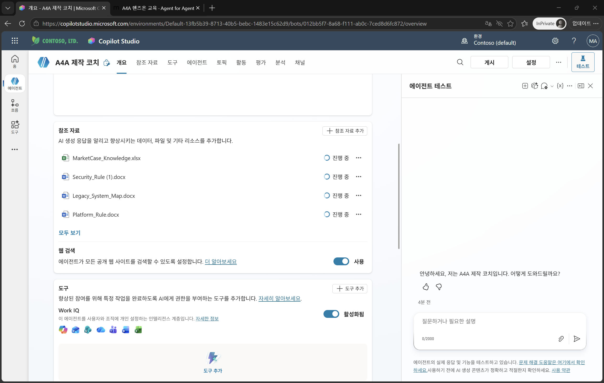
원본 유형을 고르는 화면에서 파일 업로드를 선택하면 파일 업로드 팝업이 열립니다. PART 2와 똑같이 실습 자료 4종을 끌어다 놓거나 디바이스에서 찾아보기로 추가합니다.
네 파일이 파일(4) 목록에 보이면 우측 하단 에이전트에 추가를 누릅니다.
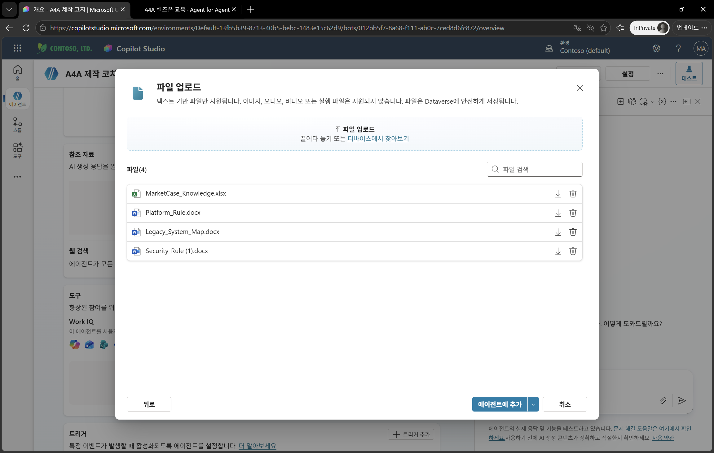
업로드한 파일은 Dataverse에 저장되며(별도 인증 불필요), 잠시 진행 중으로 표시되다가 처리가 끝나면 사용할 수 있습니다.
4종은 사내 기준을 주지만 제품 최신 기능은 담지 않습니다. 그게 필요하면 넓은 웹 검색 대신 신뢰할 사이트만 지식으로 추가합니다. + 참조 자료 추가 → 웹사이트에 아래 주소를 넣으세요.
필수는 아닙니다. 사내 4종만으로도 설계서는 충분히 나옵니다. (웹사이트 지식 = 지정한 사이트만, 웹 검색 = 인터넷 전체)
같은 개요 화면에는 참조 자료 외에도 몇 가지 설정이 더 있습니다. A4A에 맞게 어떻게 둘지 정리합니다.
에이전트가 공개 웹(Bing)을 검색하게 하는 토글입니다. 이 A4A는 사내 자료에 근거해 판단하는 에이전트라, 외부 웹이 섞이면 사내 기준과 어긋난 답이 나올 수 있어 끕니다. 끄는 위치는 3.3의 설정 → 생성형 AI → 지식 → 웹의 정보 사용입니다(거기서 캡처로 안내).
도구 추가로 에이전트가 실제 작업(설계서 생성, 메일 발송 등)을 하도록 기능을 붙입니다. A4A의 설계서 생성 도구는 뒤의 3.5 단계에서 만듭니다. 지금은 비워둬도 됩니다.
Work IQ는 에이전트를 내 메일, 일정, 문서 같은 M365 맥락에 연결하는 인텔리전스 계층입니다(프리뷰). 개요 화면의 Work IQ 토글로 켜고 끄며, 기본값은 비활성화됨입니다.
켜면 똑똑해지는 면도 있습니다. 내 메일과 일정을 보고 “이 보고 메일을 매주 반복하시네요”처럼 고충을 먼저 짚어줄 수 있죠. 다만 이번 실습은 꺼둡니다. 누구나 같은 결과를 만들어야 하는데, 켜면 사람마다 데이터가 달라 결과가 제각각이고, M365 Copilot 라이선스도 필요하기 때문입니다. “내 업무를 아는 비서형 에이전트”를 만들 때 켜는 기능으로 기억하세요.
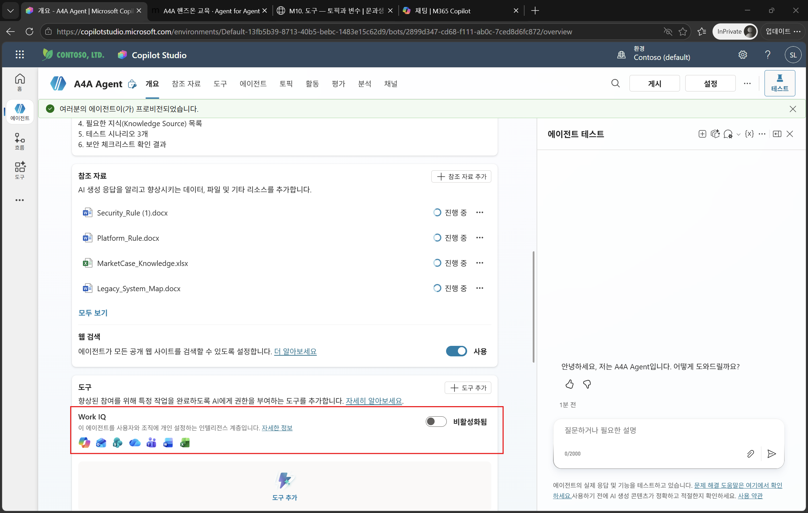
우측 상단 설정 → 생성형 AI에서 오케스트레이션이 생성형(Generative)으로 되어 있는지 확인합니다(신규 에이전트 기본값).
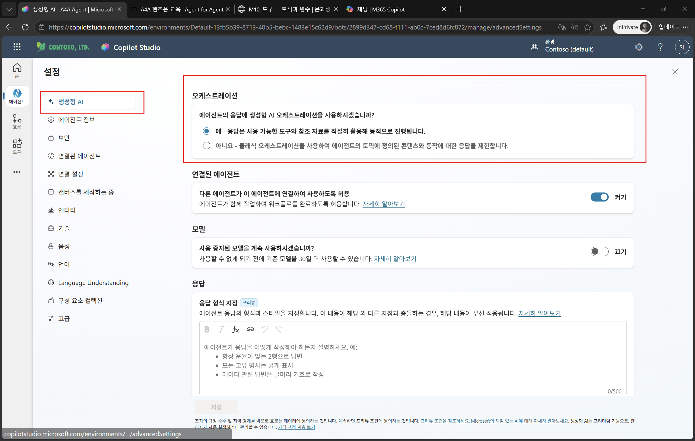
같은 화면 아래 지식 섹션에서 두 토글을 모두 끕니다.
바꿨다면 하단 저장을 누릅니다.
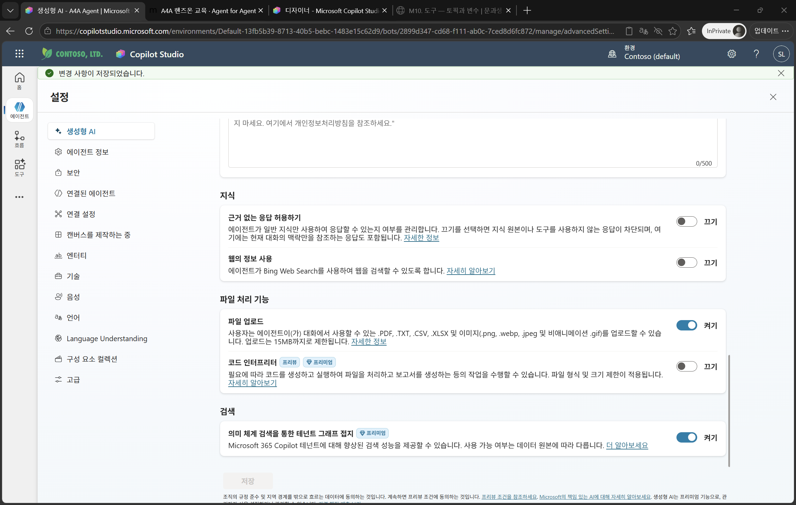
이 토픽의 목적은 사용자의 업무 고충을 한 번에 하나씩 질문해 수집하는 것입니다. 모은 답변은 변수에 담기고, 뒤이어 참조 자료 4종에 근거한 설계 방향(또는 3.5의 설계서)으로 이어집니다.
상단 토픽 탭으로 이동합니다. 필터에서 사용자 지정과 시스템 토픽을 볼 수 있는데, 우리는 새로 만들 것이므로 좌측 상단 + 토픽 추가 → 새로 시작을 누릅니다.
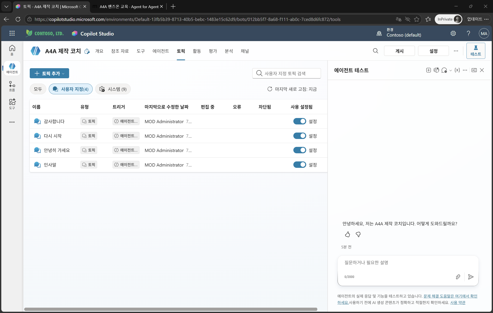
빈 캔버스가 열리고 맨 위에 트리거 노드가 나타납니다.
생성형 모드에서는 트리거 노드에 이 에이전트 선택이 표시되고, 그 아래 토픽이 수행하는 작업 설명 입력란이 있습니다. 에이전트는 이 설명을 보고 언제 이 토픽을 실행할지 스스로 판단합니다. 입력란(회색 예시 안내가 보이는 칸)을 클릭하고 아래 문장을 그대로 붙여넣으세요.
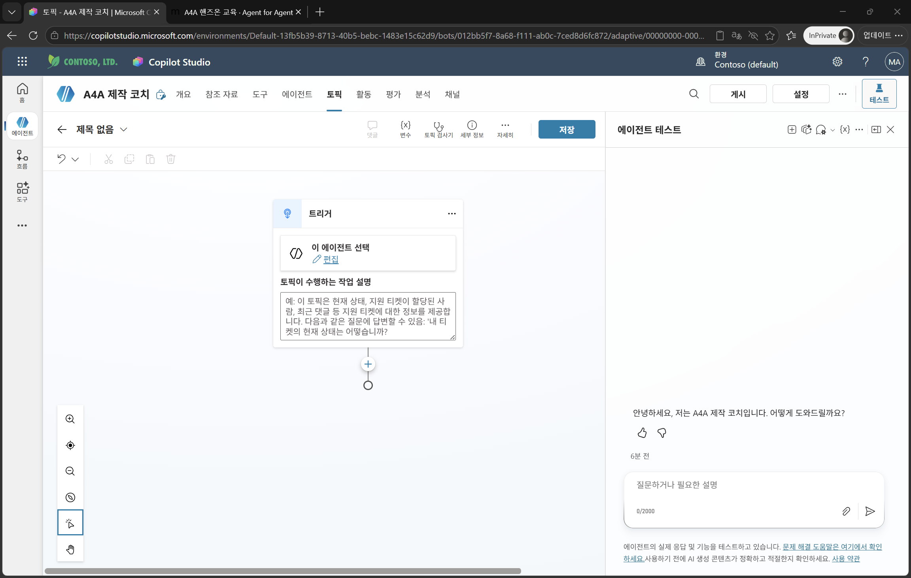
사용자가 업무의 어려움, 반복 작업, 자동화하고 싶은 일에 대해 이야기할 때 이 토픽을 실행합니다. 사용자의 업무 고충을 한 번에 한 가지씩 질문해 구체화하고, 어떤 업무인지·얼마나 자주 반복되는지·어떤 데이터를 다루는지·결과물 형태는 무엇인지를 파악합니다. 충분히 파악되면 적합한 플랫폼과 에이전트 설계 방향을 제안합니다.
트리거 아래 +를 누르면 노드 추가 메뉴가 열립니다. 질문하기를 선택합니다.
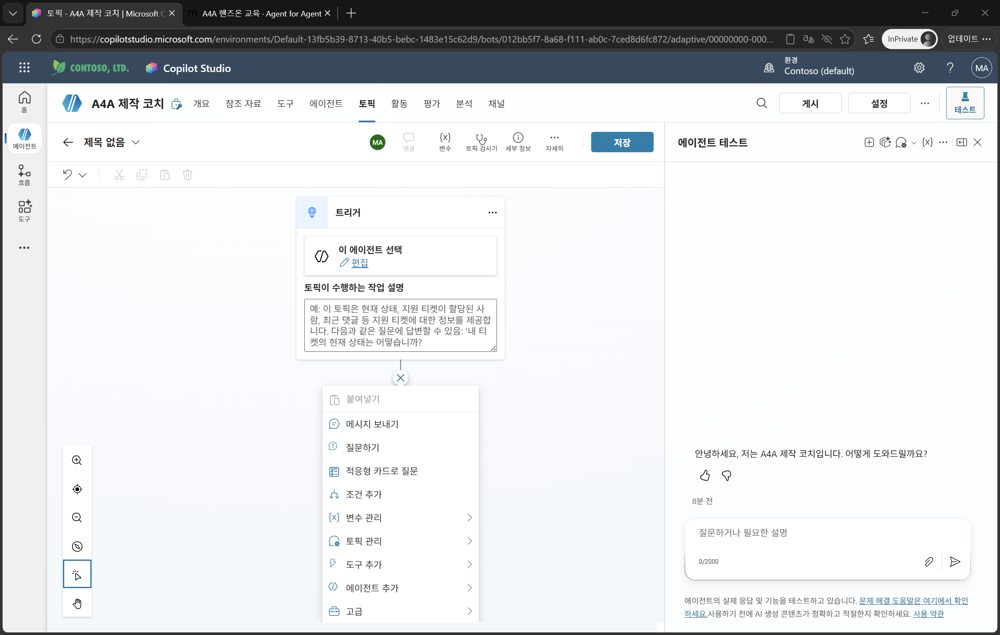
질문 노드가 추가됩니다. 아래 세 칸을 차례로 설정하세요.
업무고충으로 바꾸면 됩니다.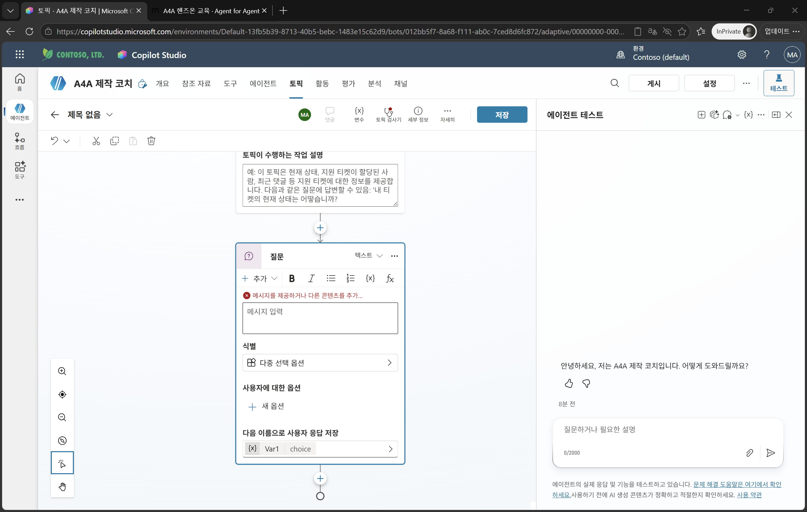
업무고충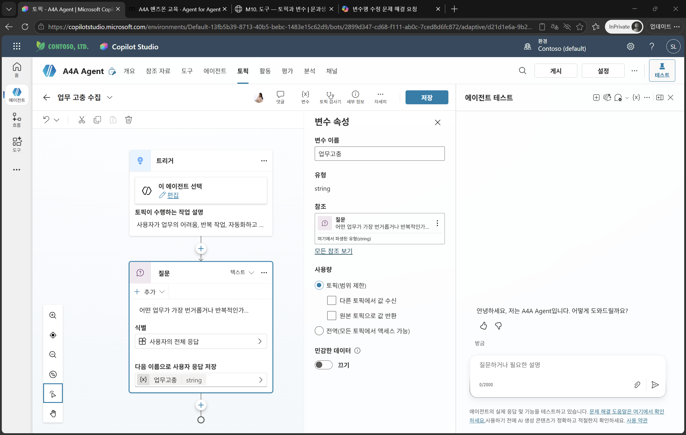
업무고충으로 변경같은 방식으로 두 번째 질문도 하나 더 만듭니다. 위와 똑같이 + → 질문하기로 노드를 추가하고, 이번엔 식별을 기본값 다중 선택 옵션 그대로 둔 채 보기를 한 줄에 하나씩 입력한 뒤, 변수 이름을 반복주기로 바꿉니다.
반복주기 · 식별: 다중 선택 옵션그 업무는 얼마나 자주 반복되나요?질문 노드까지 만들었으면 우측 상단 저장을 눌러 토픽을 저장합니다. 토픽은 인터뷰 답변을 모으는 역할까지입니다. 모은 답으로 설계서를 만드는 일은 3.5의 ‘설계서 생성’ 도구가 맡습니다(인터뷰가 끝나면 자동으로 호출됩니다).
이 단계는 “설계서를 매번 똑같은 형식으로” 만들고 싶을 때 더하는 심화입니다. 앞서 본 대로, 에이전트는 이 도구를 이름·설명을 보고 스스로 호출하고, 필요한 입력은 사용자에게 직접 질문해 채웁니다.
상단 도구 탭(또는 개요의 도구 섹션)에서 + 도구 추가 → 새 도구를 누르고 도구 유형을 고릅니다.
| 도구 유형 | 용도 |
|---|---|
| 프롬프트(Prompt) | 단일 LLM 프롬프트, 인터뷰 결과를 설계서 형식으로 구조화(지식 참조 가능) |
| 에이전트 흐름(Agent flow) | 로우코드 자동화, Word 생성·SharePoint 업로드·승인 |
| 사용자 지정 커넥터 | 외부 API/서비스 연결 |
| Model Context Protocol | MCP 서버 연결(신규) |
| REST API · 컴퓨터 사용 | REST 엔드포인트 연결, 화면 조작 자동화(고급) |
새 도구 → 프롬프트를 선택하면 프롬프트 편집기가 열립니다. 화면이 두 칸으로 나뉘는데, 왼쪽 지침 칸이 곧 프롬프트 본문이고 오른쪽 모델 응답은 테스트 결과가 보이는 곳입니다.
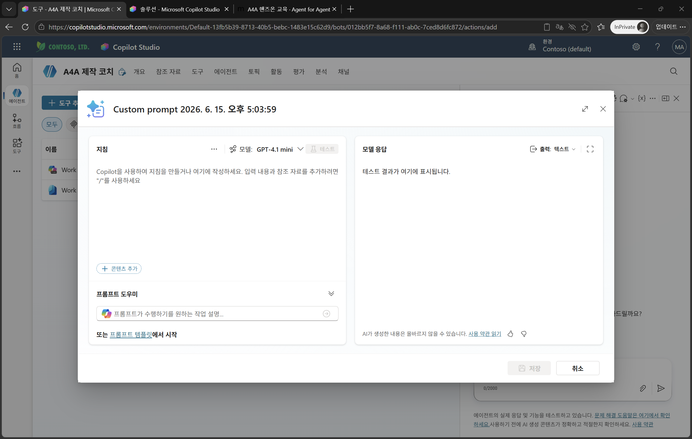
/로 입력 변수를 넣습니다① 먼저 아래 본문을 지침 칸에 붙여넣습니다.
아래 업무 인터뷰 내용을 바탕으로 에이전트 제작 설계서를 만들어 주세요. 사내 규정(Security_Rule)과 플랫폼 기준(Platform_Rule)에 어긋나지 않게 작성합니다. [업무 인터뷰 내용] （여기에 입력 변수 인터뷰내용 삽입） [다음 항목의 내용을 각각 작성] 1. 에이전트 이름과 한 줄 목적 2. 추천 플랫폼(Agent Builder 또는 Copilot Studio)과 선정 이유 3. 지침(Instructions) 초안 4. 필요한 참조 자료(Knowledge Source) 목록 5. 테스트 시나리오 3개 6. 보안 체크리스트 확인 결과
② （여기에 입력 변수 인터뷰내용 삽입） 줄을 지우고, 그 자리에서 / 를 입력합니다. 뜨는 메뉴에서 입력 추가(또는 + 콘텐츠 추가 → 입력)를 고르고, 입력 이름을 아래처럼 만듭니다. 그러면 지침 안에 파란색 입력 칩이 생깁니다.
인터뷰내용 입력을 자동으로 채워서 이 도구를 호출합니다. 그래서 여기서는 입력을 “정의”만 해 두면 됩니다(값을 직접 넣지 않습니다).③ 출력을 문서로 바꾸고 레이아웃을 올립니다. 설계서를 표 텍스트가 아니라 깔끔한 Word 문서 파일로 받기 위해, 프롬프트 편집기 오른쪽 위 출력에서 텍스트 대신 문서를 고른 뒤 그 옆 문서 설정을 엽니다. 먼저 아래 레이아웃 파일을 내려받으세요.
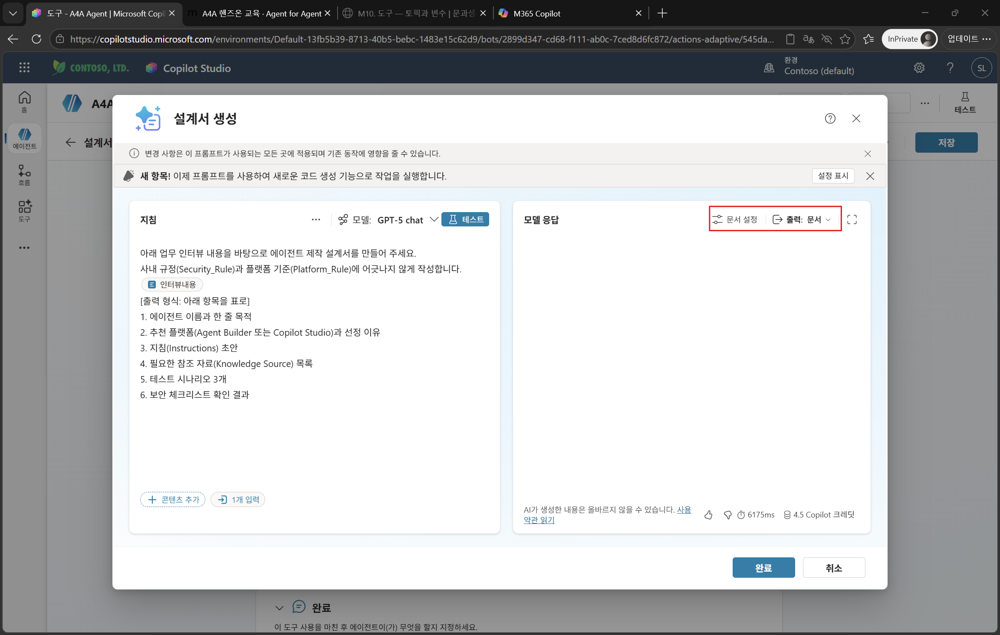
문서 레이아웃 업로드의 끌어서 놓거나 찾아보려면 선택에 방금 받은 A4A_Design_Layout.docx를 올립니다. 그러면 레이아웃 안의 채울 필드 목록(예: {{에이전트이름}}, {{추천플랫폼}}, {{지침초안}} 등)이 표시됩니다.
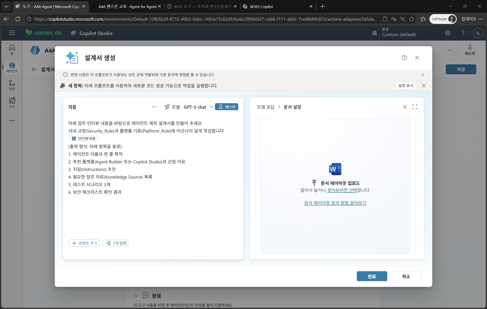
{{에이전트이름}}). 표 안의 칸은 표이름.열이름으로 적습니다(예: {{items.수량}}). 필드 이름에 공백을 넣지 않습니다. 레이아웃 파일은 20MB 이하, 암호·기밀 문서가 아니어야 합니다.④ 모델은 기본값 그대로 두고 테스트를 누릅니다. 테스트하려면 인터뷰내용 입력에 실제 인터뷰 답변 같은 예시 문장을 한 번 넣어야 합니다(설명 문구가 아니라 진짜 내용이어야 문서가 채워집니다). 아래 샘플을 그대로 붙이면, 오른쪽에서 빈칸이 모두 채워진 Word 설계서를 내려받을 수 있습니다.
매주 월요일에 팀 주간 보고서를 작성합니다. 팀원 5명이 보낸 진행 현황 엑셀과 지난주 회의록을 취합해 요약하고, 표로 정리해 부서장에게 메일로 보냅니다. 한 번에 약 2시간이 걸리고, 가장 번거로운 건 여러 엑셀을 일일이 복사해 합치는 부분입니다. 다루는 자료는 사내 내부 자료(내부 등급)이고, 결과물은 워드 보고서와 요약 메일입니다.
인터뷰내용도 AI로 채우기로 두면 “AI가 대신 채워주므로 별도 조치가 필요 없습니다”라고 안내됩니다. 마지막으로 저장합니다.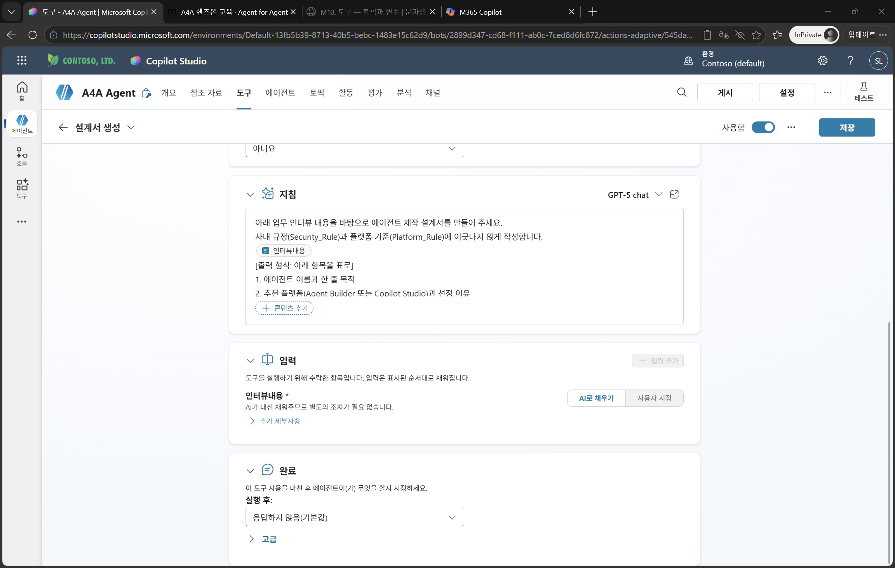
저장할 때(또는 도구 세부 정보에서) 도구 이름과 설명을 입력합니다. 에이전트는 바로 이 설명을 읽고 “언제 이 도구를 쓸지” 판단하므로, 설명을 명확히 쓰는 게 핵심입니다. 아래를 그대로 넣으세요.
저장하면 에이전트의 도구 목록에 설계서 생성이 추가되고, 이때부터 에이전트가 필요할 때 자동으로 이 도구를 부릅니다.
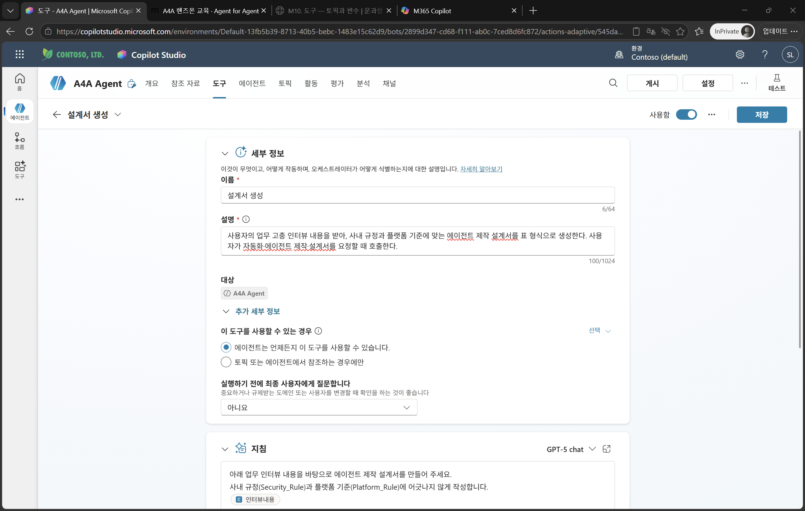
새 지침에는 이미 “‘설계서 생성’ 도구를 호출한다”는 규칙이 들어 있어, 따로 한 줄을 더 넣지 않아도 됩니다. 바로 테스트로 확인합니다.
설계서를 만들기 전 'Word로 받으시겠어요?'라고 한 번 묻는다. 한 줄을 더하면 됩니다.)설계서가 완성된 뒤 사람의 검토·승인(3.6)을 붙이려면, 프롬프트 도구만으로는 안 되고 에이전트 흐름(Agent flow)이 필요합니다. 이 흐름은 설계서를 직접 만들지 않고, 에이전트가 만든 설계서 내용을 입력으로 받아 승인을 처리합니다. 여기서 흐름의 뼈대만 만들어 두고, 승인 동작은 3.6에서 이어서 추가합니다.
좌측 흐름 → 새 에이전트 흐름을 만듭니다. 트리거는 When an agent calls the flow(에이전트가 흐름을 호출할 때)이고, 여기에 입력 하나(예: 설계서내용, 텍스트)를 추가합니다. 맨 마지막에는 Respond to the agent(에이전트에 응답)가 있어야 합니다. 그 응답 액션의 Networking에서 Asynchronous response를 Off로 두고, 100초 안에 응답하도록 만든 뒤 게시해야 도구로 쓸 수 있습니다.
3.5의 마지막 단계(⑦)에서 만든 에이전트 흐름에 이어, 설계서가 완성되면 담당자에게 검토·승인을 요청하는 동작을 붙입니다.
좌측 메뉴 흐름에서 3.5(⑦)에서 만든 에이전트 흐름을 클릭해 편집기를 엽니다. 트리거(설계서 내용을 입력으로 받음)와 맨 마지막 Respond to the agent(에이전트에 응답) 사이에 승인 동작을 넣을 것입니다.
트리거 아래의 +(새 단계)를 누르고, 검색창에 승인을 입력합니다. 표준 승인 범주가 보이면 그 안의 승인 시작 및 대기(Start and wait for an approval) 동작을 선택합니다.
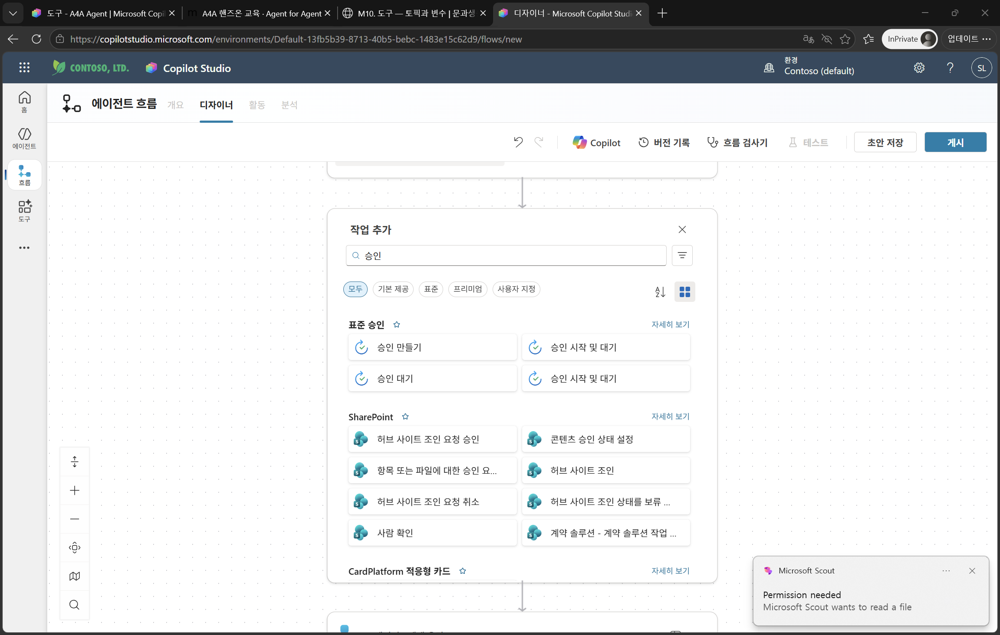
동작을 추가하면 아래 입력 칸들이 나옵니다. 각 칸을 다음과 같이 채웁니다.
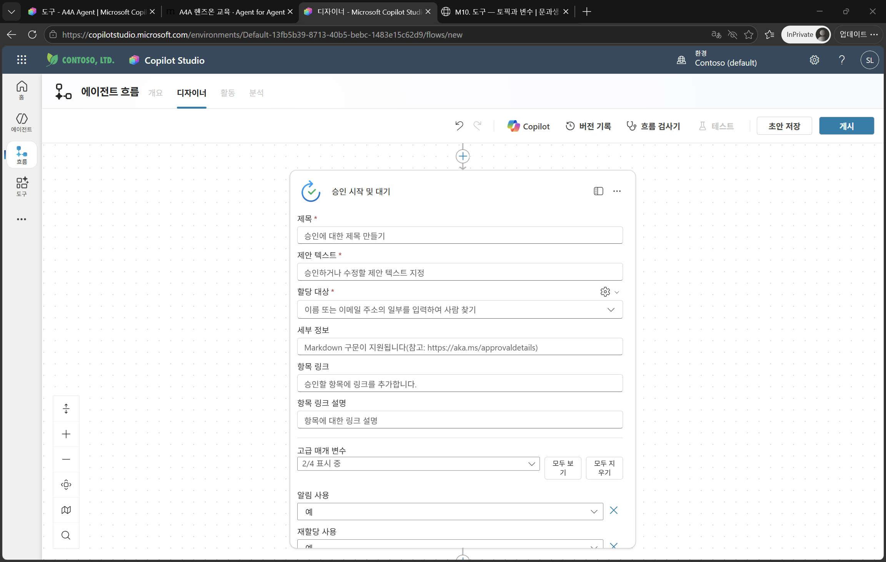
설계서내용을 삽입합니다. 이 칸은 Markdown을 지원해 설계서 본문이 그대로 보입니다.이렇게 하면 흐름이 여기서 멈추고, 담당자에게 Teams 알림과 이메일로 검토·승인 요청이 갑니다. 담당자가 응답할 때까지 기다립니다.
승인 동작 아래 + → 조건 추가(Condition)를 넣습니다. 조건은 승인 동작의 결과(Outcome) = Approve로 설정합니다.
마지막 Respond to the agent(에이전트에 응답) 동작에서, 승인 결과(승인됨/반려됨)와 최종 설계서를 출력 값에 담습니다. 그런 다음 우측 상단 게시를 눌러 흐름을 저장·게시합니다. (게시해야 에이전트가 이 흐름을 도구로 사용할 수 있습니다.)
우측 상단 테스트를 눌러 오른쪽 에이전트 테스트 패널에서 대화해 봅니다. 에이전트가 인사말로 응답하면 정상입니다. 생성형 모드에서는 어떤 토픽·도구·지식이 선택됐는지 실시간으로 보여주고, 응답을 클릭하면 해당 노드로 이동합니다.
우측 상단 게시 → 확인 → 게시 완료(수 분 소요).
채널에서 Teams 및 Microsoft 365 Copilot을 추가하면 사내에서 바로 사용할 수 있습니다. 조직 배포는 관리자 승인 요청으로 관리자 승인을 받습니다.
오늘 “에이전트 만들기를 도와주는 에이전트(A4A)”를 두 가지 도구로 직접 만들어 보았습니다. 여기서 익힌 흐름은 어떤 에이전트를 만들 때도 그대로 적용됩니다.
4개 파일을 압축파일 하나로 한 번에 받기
보안 규정·데이터 등급 기준
사내 시스템 연동·접근성
플랫폼 선정 기준
우수·실패 사례 데이터(엑셀)